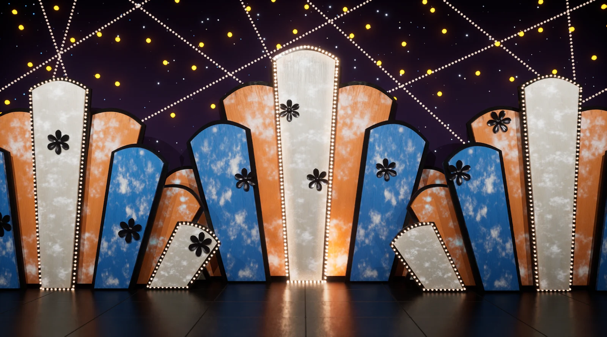
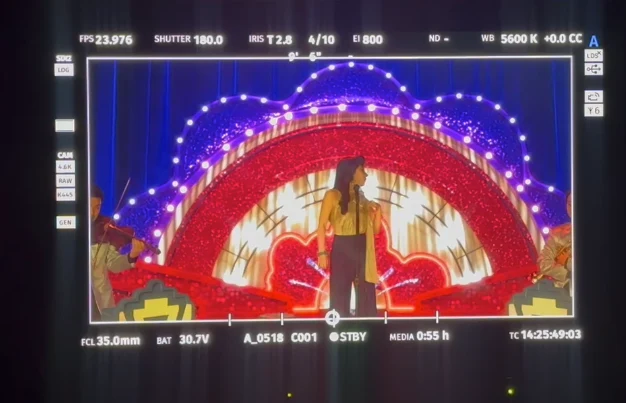

천천히 강렬하게
작품에 사용할 세 가지 무대 환경 중 하나의 전체 제작을 담당하였으며, 나머지 두 환경에서는 빛이 흐르는 라이트 효과를 머티리얼로 제작했다.
1. 무대 환경 제작
무대 레퍼런스는 팀에서 제안했으며, 이를 바탕으로 담당 무대를 처음부터 제작하였다.

2. 라이트 머티리얼 제작
다른 두 무대 환경에 사용할 라이트 효과를 머티리얼로 제작했다. 빛이 흐르는 방향과 패턴을 설정하고, 0~1 범위의 파라미터 값으로 조절할 수 있도록 구성했다.
빛이 흐르는 속도와 방향, 켜지는 전등 사이의 간격, 한 번에 몇 개씩 흘러가게 할지를 조절할 수 있도록 제작했다.


3. 렌더링과 촬영 적용
제작한 무대 환경과 라이트 효과는 영상으로 렌더링하여 촬영 현장의 LED에 사용했다.

